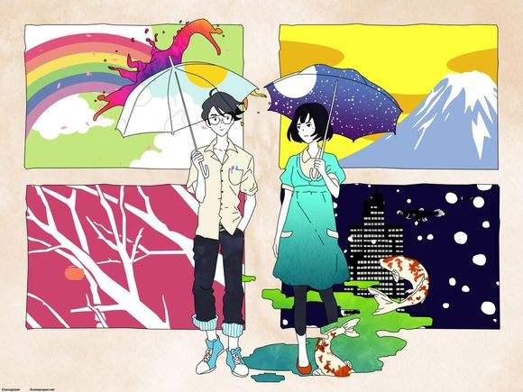

四叠半神话大系
简介：
森见登美彦原作的《四畳半神话大系》，故事以京都大学的某个三年级男生为主人公，从四个平行世界的角度，描写当初在一年级的时候选择了不同的社团的他，这三年来的大学生活究竟有怎样的不同。作品标题中的“四畳半”，正是用来形容典型的日本迷你学生公寓的房间面积。 无名男主角升入大一，对未来充满希望，渴望能够结识黑发美女，妄想握住梦幻瑰宝——瑰丽而充实的校园生活，然而现实却是如此遥远。他加入各种充满了“爱”的社团，却改变不了自身的宅男气息，无论如何也无法忍受周围“友爱”的氛围而不得不逃离社团，缩回到小小的“四叠半宿舍”。
他结识了损友小津，被拉入了荒诞、疯狂而又无意义的生活漩涡中——诱拐充气娃娃香织小姐、找寻传说中能去除任何脏污的梦幻圆鬃刷、充当不择手段追讨逾期借书者的图书馆警察、为贡献自己成为京都观光资源而不论刮风下雨都在哲学之道苦读并辩论西田几多郎的《善的研究》……浑浑噩噩地度过两年后，真想干脆回到闪光的大一再重来一次大学生活啊！然而无论是他加入电影社“禊”或写着“弟子招募”的可疑社团，还是加入垒球社“暖暖”、秘密机构“福猫饭店”，他都必然的要遇到小津，无法摆脱浪费生命的魔咒。也许认命地当个“无法过充实的学生生活星球人”会更好一点？ 一幕幕荒诞至极的校园生活，加上无边的想象、膨胀的宅男气息、京都鸭川畔的古雅文化氛围，这就是森见编造出的让人捧腹不已的魔幻写实杰作。
佳句分享：
1.我们大部分的烦恼，是来自于梦想另一种有可能的人生。把希望寄托于自己的可能性这种不能指望的东西，正是万恶的根源。你必须认同无法变成其他人的自己。
2.大概有人会说：反正你还年轻，人生有无限可能。 天底下没有那种蠢事。不可以惯坏年轻人。 俗话说“三岁看大”，而我已经二十有一，再过不久，就诞生在这世上将近四分之一个世纪了，事到如今，一个年轻人就算试图改变自己的人格，做些无谓努力，又能怎样呢？若是勉强扭曲已经变得硬邦邦、屹立在半空中的人格，充其量就是喀嚓一声折断而已。 你必须拖着如今在眼前的自己，终了一生。不能对这个事实视而不见。 我坚决打算睁大眼睛。 可是，有些惨不忍睹。
3.说不在场的第三者的坏话，往往会让人们的情感更深厚。
4.“同学，如果良机来了，千万别让它跑掉。良机来的时候，不可以漫不经心地做同样的事。请把心一横，采取和至今截然不同的做法抓住它。这么一来，不满就会消失，你就能走上另一条人生道路。尽管那里也会有不同的不满。你应该很清楚我在讲什么。”
5.当然，要定义这是喜剧或悲剧是读者的自由。若要我试着诉说个人毫无建树的意见，这既非悲剧，也不是喜剧。假如有人看了这篇文章而泪流满面，不是感受性过度敏锐，就是镜片上黏上了咖喱粉。此外，假如有人看了这篇文章而捧腹大笑，我大概会打从心里憎恨那个人，追他追到天涯海角，像对待父母的敌人般，把滚烫的热水从他头上浇下，等三分钟。